Sobre mí
Esta soy yo, soy poco sociable, aunque si con carácter fuerte, además soy muy orgullosa , soy una persona muy selectiva, pero sobre todo soy una persona muy sensible, mis pasatiempos favoritos son escuchar música, cantar, bailar, hacer un poco de ejercicio, salir a caminar, dormir, estudiar, leer libros de mi interés personal, me gusta viajar y conocer nuevos lugares, me gusta admirar la naturaleza, me encantan los atardeceres, pero sobre todo me gusta pasar tiempo con mi familia.
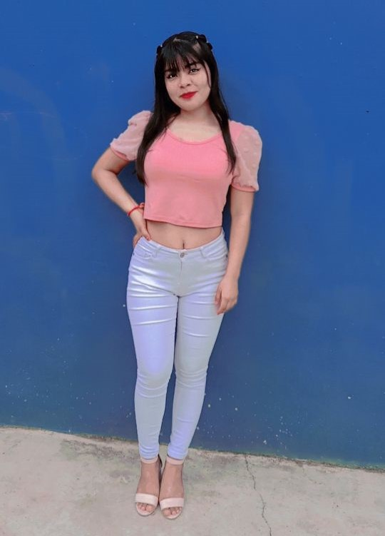Educacion
Estudio en el Tecologico de Huejutla, El Instituto Tecnológico de Huejutla (ITH) es una institución pública de educación superior, ubicada en el municipio de Huejutla de Reyes, en el Estado de Hidalgo, México.
Oferta Educativa del Instituto Tecnológico de Huejutla
- Licenciatura en Biología
- Ingeniería en Agronomía
- Ingeniería en Gestión Empresarial
- Ingeniería en Sistemas Computacionales
Avance Reticular
En esta seccion se puede visualizar el avance reticular que llevo actualmente, en total son 53 materias que se toman durante toda la carrera, como se puede observar llevo 38 materias acreditadas, y son seis materias las que estoy cursando en este periodo Agosto-Diciembre 2024, aun faltan siete materias por cursar mas el servicio y la residencia
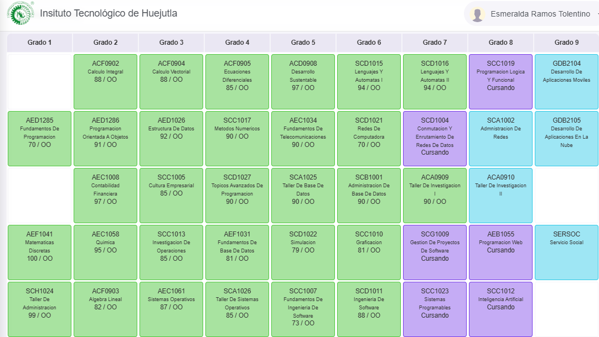 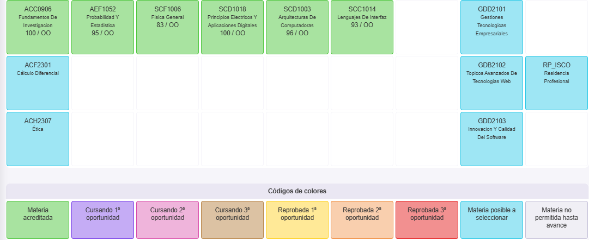Familia
Mi familia es la siguiente, los de la primera foto son mi padres nabor y lupita , tengo cinco hermanas las cuales son: Jaqueline la hermana mayor, Ruby, Dayra, e Iveth la hermana menor, tambien tengo tres sobrinos los cuales son Amelie, Ian Emanuel y Mia Yoeli, y aunque ya no estamos juntos seguimos siendo una familia muy unida.
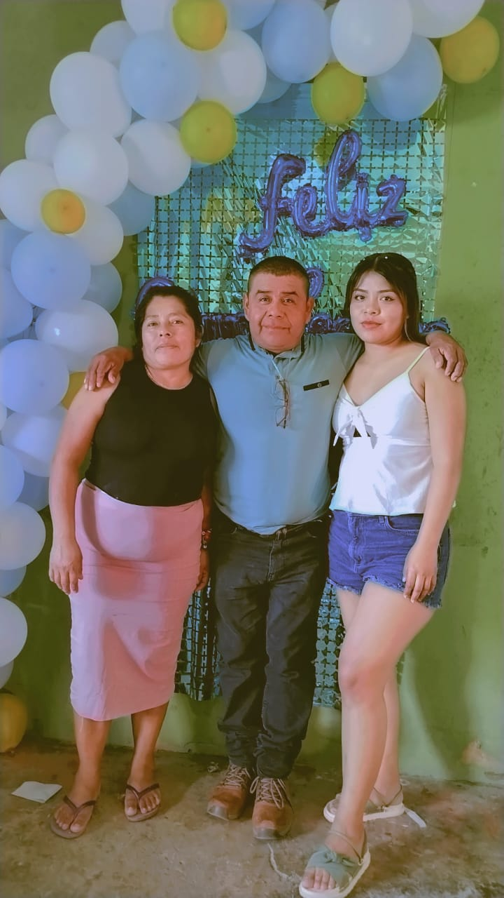 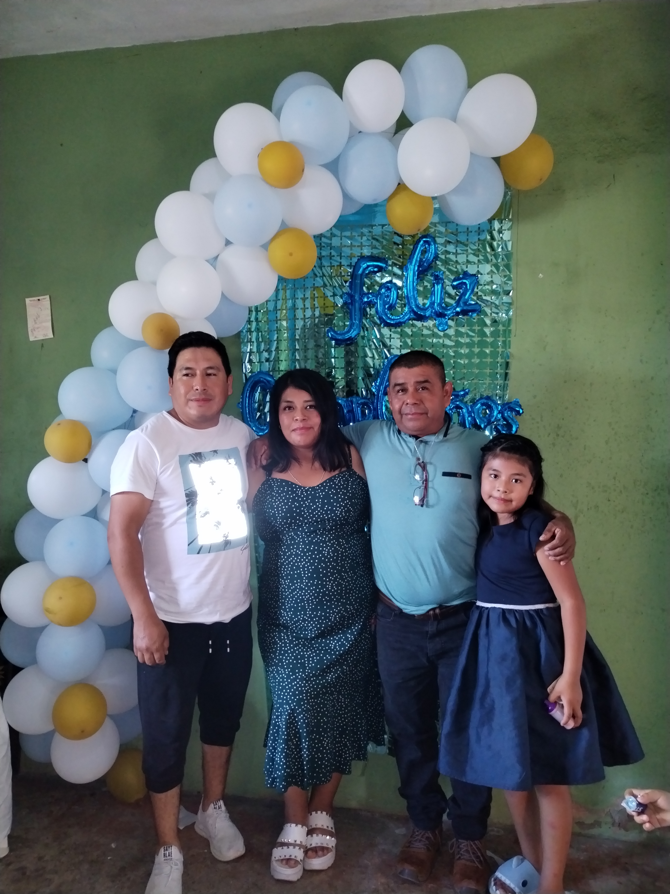 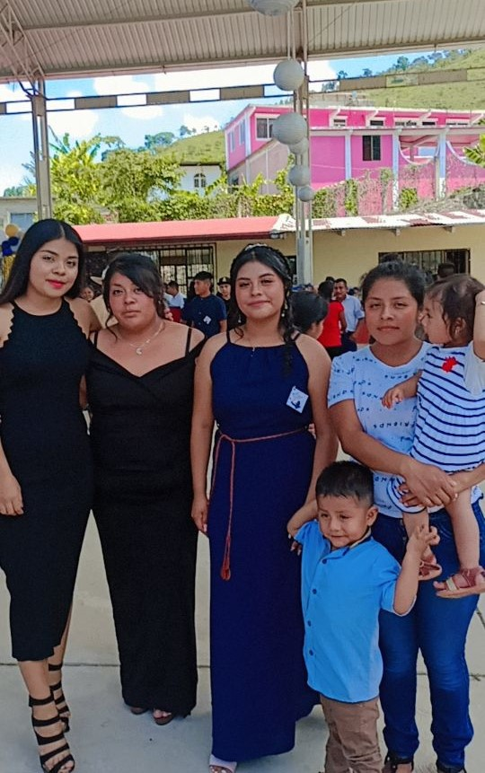 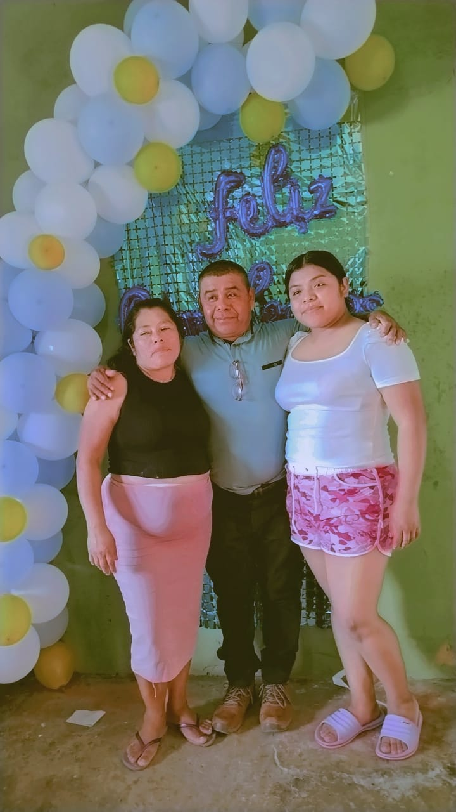 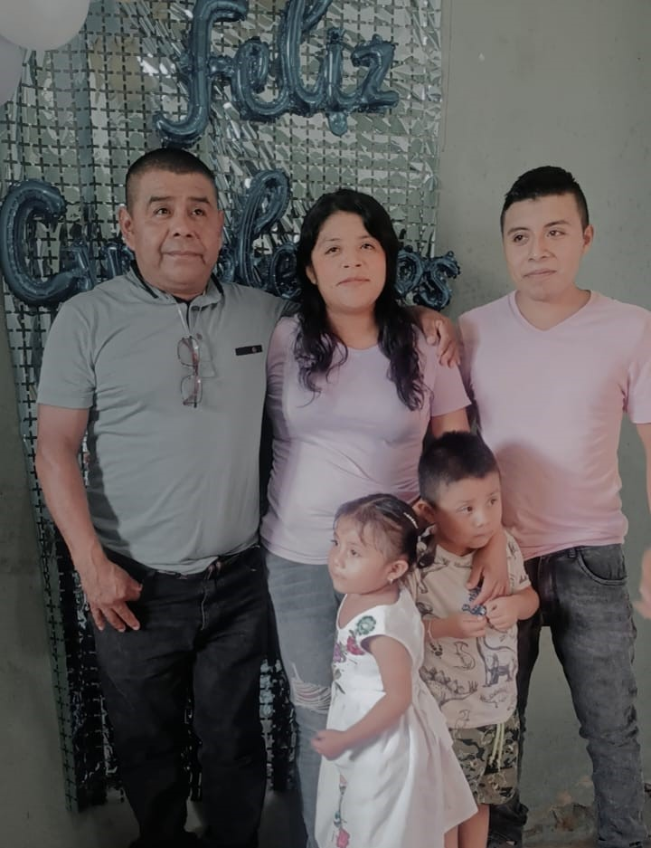 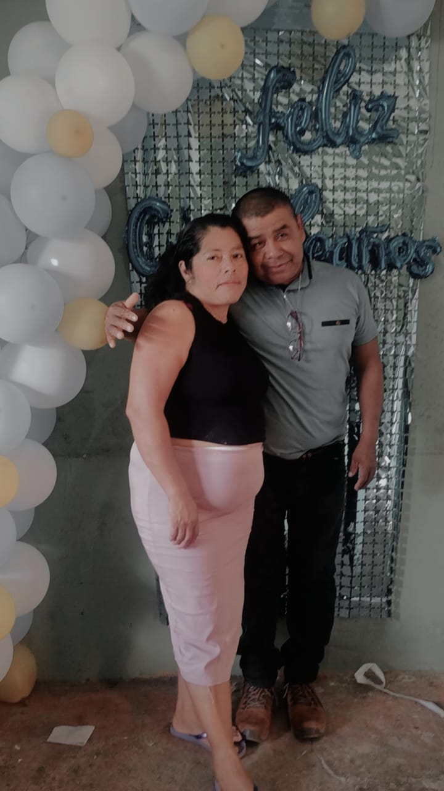 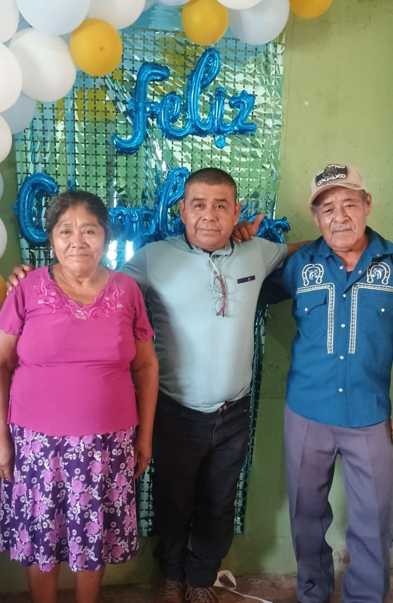 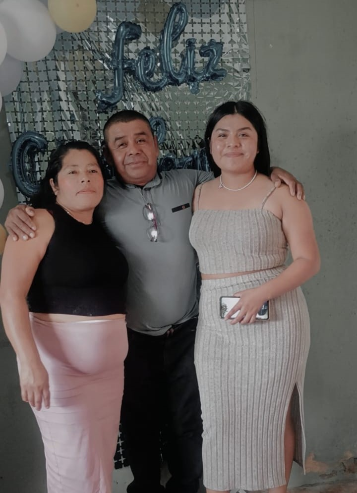 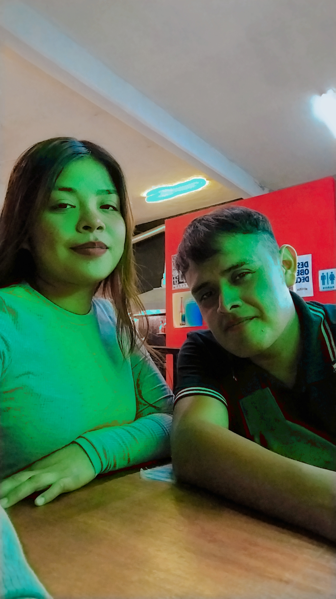
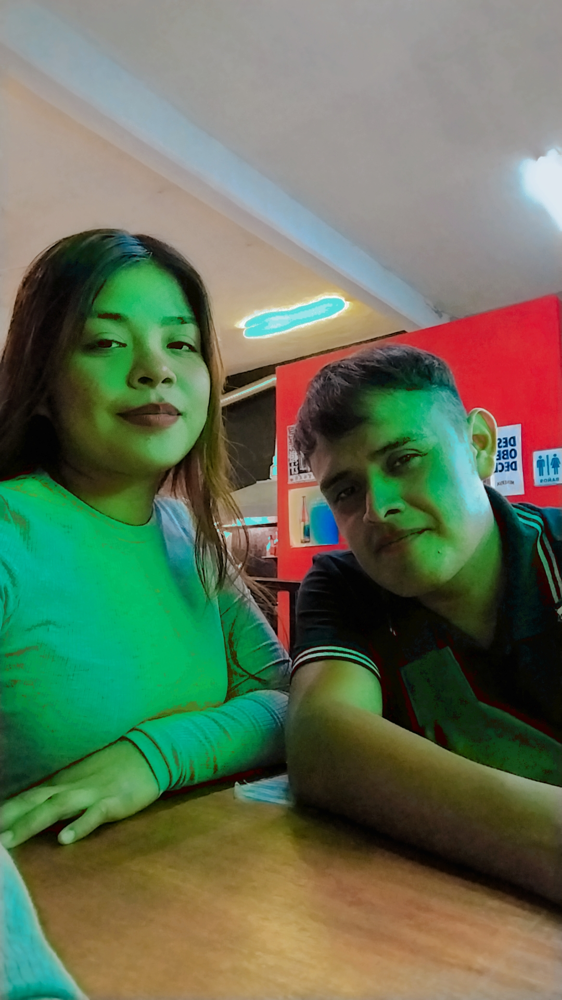